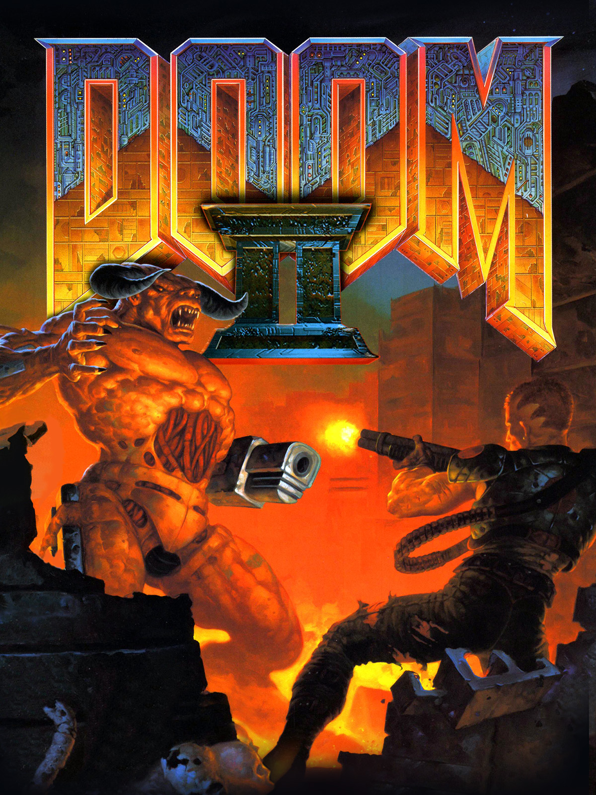

Doom I
Doom II
Doom III
Doom III: Resurrection of Evil


| Año de lanzamiento | Desarrollador | Género | Clasificación |
|---|---|---|---|
| 1993 | ID Software | Disparos en primera persona (FPS) | No apto para menores de 18 años |
Es un juego de disparos en primera persona lanzado en 1993 por id Software, y es ampliamente considerado como uno de los juegos más influyentes en la historia de los videojuegos.
Algunas de las formas en que Doom impactó en la industria de los videojuegos son:
Doom fue uno de los primeros juegos en popularizar el género de los juegos de disparos en primera persona (FPS). Antes de Doom, los juegos FPS eran principalmente experimentales y menos conocidos, pero Doom ayudó a llevar el género al mainstream (moda dominante) y a establecer las convenciones que todavía se utilizan hoy en día.
Doom fue uno de los primeros juegos en utilizar técnicas avanzadas de renderizado en 3D, como la renderización de texturas y la iluminación dinámica, lo que permitió a los desarrolladores crear mundos virtuales más realistas y detallados. La tecnología detrás de Doom también allanó el camino para muchos juegos futuros en términos de gráficos y diseño.
Doom fue uno de los primeros juegos en permitir a los jugadores crear y compartir sus propios niveles y modificaciones del juego. Esto ayudó a establecer una comunidad de modding dedicada, que continuó desarrollando y mejorando el juego durante muchos años después de su lanzamiento original.
Doom fue una sensación cultural en los años 90, y se convirtió en un objeto de fascinación para muchos jóvenes, lo que influyó en la cultura popular y la forma en que se percibían los videojuegos.
|  | |
|
Doom I |
Doom II |
Doom III |
Doom III: Resurrection of Evil |
|
|
|
Final Doom |
Doom |
Doom Eternal |
Doom 3: Vr edition |